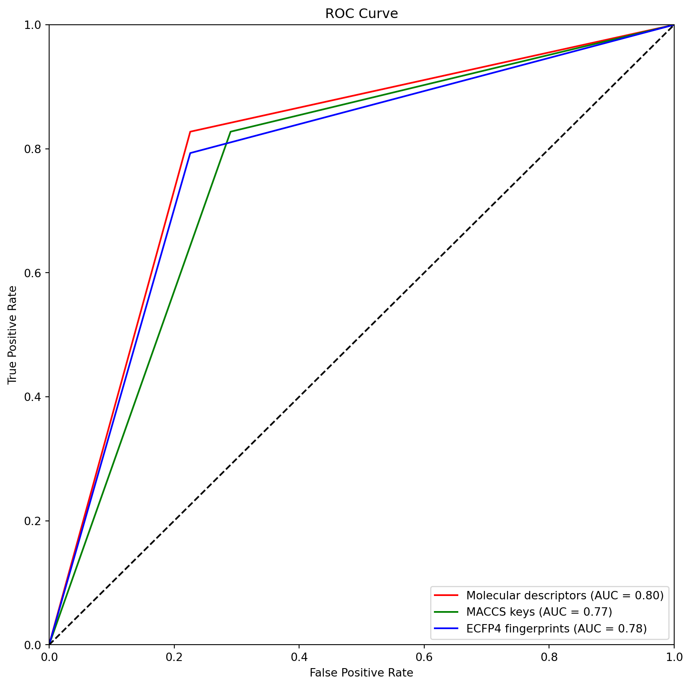

![]()
import pandas as pd
import numpy as np
import matplotlib.pyplot as plt
import seaborn as sns
from sklearn.model_selection import cross_val_score
from sklearn.model_selection import GridSearchCV
from sklearn.metrics import (
roc_curve,
auc,
roc_auc_score,
confusion_matrix,
classification_report,
accuracy_score,
precision_score,
recall_score,
f1_score,
precision_recall_curve,
average_precision_score,
)
from sklearn.ensemble import RandomForestClassifierRandom Forest models
# DIRECTORIES
input_path = "../data/processed/"
train_path = "../data/processed/train_data/"
test_path = "../data/processed/test_data/"
results_path = "../models/results/"
# FILES
# MOLECULAR DESCRIPTORS
molecular_descriptors_training_file = "molecular_descriptors_training.csv"
molecular_descriptors_test_file = "molecular_descriptors_test.csv"
# MACCS KEYS
maccs_keys_training_file = "maccs_keys_training.csv"
maccs_keys_test_file = "maccs_keys_test.csv"
# ECFP4 FINGERPRINTS
ecfp4_fingerprints_training_file = "ecfp4_fingerprints_training.csv"
ecfp4_fingerprints_test_file = "ecfp4_fingerprints_test.csv"
# RESULTS FILE
results_file = "results_table.csv"# LOAD DATA
# MOLECULAR DESCRIPTORS
## TRAINING
molecular_descriptors_training = pd.read_csv(
train_path + molecular_descriptors_training_file
)
X_training_molecular_descriptors = molecular_descriptors_training.drop(
columns=["activity"]
)
Y_training_molecular_descriptors = molecular_descriptors_training["activity"]
## TEST
molecular_descriptors_test = pd.read_csv(test_path + molecular_descriptors_test_file)
X_test_molecular_descriptors = molecular_descriptors_test.drop(columns=["activity"])
Y_test_molecular_descriptors = molecular_descriptors_test["activity"]
# MACCS KEYS
## TRAINING
macc_keys_training = pd.read_csv(train_path + maccs_keys_training_file)
X_training_maccs_keys = macc_keys_training.drop(columns=["activity"])
Y_training_maccs_keys = macc_keys_training["activity"]
## TEST
macc_keys_test = pd.read_csv(test_path + maccs_keys_test_file)
X_test_maccs_keys = macc_keys_test.drop(columns=["activity"])
Y_test_maccs_keys = macc_keys_test["activity"]
# ECFP4 FINGERPRINTS
## TRAINING
ecfp4_fingerprints_training = pd.read_csv(train_path + ecfp4_fingerprints_training_file)
X_training_ecfp4_fingerprints = ecfp4_fingerprints_training.drop(columns=["activity"])
Y_training_ecfp4_fingerprints = ecfp4_fingerprints_training["activity"]
## TEST
ecfp4_fingerprints_test = pd.read_csv(test_path + ecfp4_fingerprints_test_file)
X_test_ecfp4_fingerprints = ecfp4_fingerprints_test.drop(columns=["activity"])
Y_test_ecfp4_fingerprints = ecfp4_fingerprints_test["activity"]# DEFINE THE PARAMETERS TO EXPLORE
parameters = {
"n_estimators": [10, 50, 100],
"max_depth": [5, 10, 50],
"min_samples_split": [5, 10, 20],
"min_samples_leaf": [5, 10, 50],
"max_features": ["sqrt", "log2"],
}1 RANDOM FOREST MODEL FOR MOLECULAR DESCRIPTORS
# BUILD A RANDOM FOREST MODEL FOR MOLECULAR DESCRIPTORS. USE GRID SEARCH TO EXPLORE ALL THE POSSIBLE COMBINATIONS AND FIND THE BEST PARAMETERS. USE 5-FOLD CROSS VALIDATION.
# DEFINE THE MODEL
rf_model = RandomForestClassifier(random_state=0)
# DEFINE THE GRID SEARCH
grid_molecular_descriptors = GridSearchCV(
estimator=rf_model,
param_grid=parameters,
scoring="roc_auc",
cv=5,
n_jobs=-1,
verbose=3,
)
# TRAIN THE MODEL
grid_molecular_descriptors.fit(
X_training_molecular_descriptors, Y_training_molecular_descriptors
)Fitting 5 folds for each of 162 candidates, totalling 810 fitsGridSearchCV(cv=5, estimator=RandomForestClassifier(random_state=0), n_jobs=-1,
param_grid={'max_depth': [5, 10, 50],
'max_features': ['sqrt', 'log2'],
'min_samples_leaf': [5, 10, 50],
'min_samples_split': [5, 10, 20],
'n_estimators': [10, 50, 100]},
scoring='roc_auc', verbose=3)In a Jupyter environment, please rerun this cell to show the HTML representation or trust the notebook. On GitHub, the HTML representation is unable to render, please try loading this page with nbviewer.org.
GridSearchCV(cv=5, estimator=RandomForestClassifier(random_state=0), n_jobs=-1,
param_grid={'max_depth': [5, 10, 50],
'max_features': ['sqrt', 'log2'],
'min_samples_leaf': [5, 10, 50],
'min_samples_split': [5, 10, 20],
'n_estimators': [10, 50, 100]},
scoring='roc_auc', verbose=3)RandomForestClassifier(random_state=0)
RandomForestClassifier(random_state=0)
# WE GET THE BEST KNN MODEL
best_model_molecular_descriptors = grid_molecular_descriptors.best_estimator_
best_model_name = "Random Forest Molecular Descriptors"# PREDICT
Y_pred_molecular_descriptors = best_model_molecular_descriptors.predict(
X_test_molecular_descriptors
)
# EVALUATE
accuracy = accuracy_score(Y_test_molecular_descriptors, Y_pred_molecular_descriptors)
precision = precision_score(Y_test_molecular_descriptors, Y_pred_molecular_descriptors)
recall = recall_score(Y_test_molecular_descriptors, Y_pred_molecular_descriptors)
auc_molecular_descriptors = roc_auc_score(
Y_test_molecular_descriptors, Y_pred_molecular_descriptors
)
# AUC TRAINING
Y_pred_train_molecular_descriptors = best_model_molecular_descriptors.predict(
X_training_molecular_descriptors
)
auc_train_molecular_descriptors = roc_auc_score(
Y_training_molecular_descriptors, Y_pred_train_molecular_descriptors
)
# CREATE DATAFRAME WITH RESULTS
results_molecular_descriptors = pd.DataFrame(
{
"model_name": [best_model_name],
"accuracy": [round(accuracy, 2)],
"precision": [round(precision, 2)],
"recall": [round(recall, 2)],
"auc": [round(auc_molecular_descriptors, 2)],
"auc_train": [round(auc_train_molecular_descriptors, 2)],
}
)# SAVE TABLE_RESULTS.CSV
table_results = pd.read_csv(results_path + results_file)
table_results = table_results.append(results_molecular_descriptors)
table_results.to_csv(results_path + results_file, index=False)/var/folders/3s/vv1d0lmn7g134m4psncn2_q80000gn/T/ipykernel_15004/4156157498.py:3: FutureWarning:
The frame.append method is deprecated and will be removed from pandas in a future version. Use pandas.concat instead.
2 RANDOM FOREST MODEL FOR MACCS KEYS
# BUILD A RANDOM FOREST MODEL FOR MACCS KEYS. USE GRID SEARCH TO EXPLORE ALL THE POSSIBLE COMBINATIONS AND FIND THE BEST PARAMETERS. USE 5-FOLD CROSS VALIDATION.
# DEFINE THE MODEL
rf_model = RandomForestClassifier(random_state=0)
# DEFINE THE GRID SEARCH
grid_maccs_keys = GridSearchCV(
estimator=rf_model,
param_grid=parameters,
scoring="roc_auc",
cv=5,
n_jobs=-1,
verbose=1,
)
# TRAIN THE MODEL
grid_maccs_keys.fit(X_training_maccs_keys, Y_training_maccs_keys)Fitting 5 folds for each of 162 candidates, totalling 810 fitsGridSearchCV(cv=5, estimator=RandomForestClassifier(random_state=0), n_jobs=-1,
param_grid={'max_depth': [5, 10, 50],
'max_features': ['sqrt', 'log2'],
'min_samples_leaf': [5, 10, 50],
'min_samples_split': [5, 10, 20],
'n_estimators': [10, 50, 100]},
scoring='roc_auc', verbose=1)In a Jupyter environment, please rerun this cell to show the HTML representation or trust the notebook. On GitHub, the HTML representation is unable to render, please try loading this page with nbviewer.org.
GridSearchCV(cv=5, estimator=RandomForestClassifier(random_state=0), n_jobs=-1,
param_grid={'max_depth': [5, 10, 50],
'max_features': ['sqrt', 'log2'],
'min_samples_leaf': [5, 10, 50],
'min_samples_split': [5, 10, 20],
'n_estimators': [10, 50, 100]},
scoring='roc_auc', verbose=1)RandomForestClassifier(random_state=0)
RandomForestClassifier(random_state=0)
# WE GET THE BEST RANDOM FOREST MODEL
best_model_maccs_keys = grid_maccs_keys.best_estimator_
best_model_name = "Random Forest MACCS Keys"# PREDICT
Y_pred_maccs_keys = best_model_maccs_keys.predict(X_test_maccs_keys)
# EVALUATE
accuracy = accuracy_score(Y_test_maccs_keys, Y_pred_maccs_keys)
precision = precision_score(Y_test_maccs_keys, Y_pred_maccs_keys)
recall = recall_score(Y_test_maccs_keys, Y_pred_maccs_keys)
auc_maccs_keys = roc_auc_score(Y_test_maccs_keys, Y_pred_maccs_keys)
# AUC TRAINING
Y_pred_train_maccs_keys = best_model_maccs_keys.predict(X_training_maccs_keys)
auc_train_maccs_keys = roc_auc_score(Y_training_maccs_keys, Y_pred_train_maccs_keys)
# CREATE DATAFRAME WITH RESULTS
results_maccs_keys = pd.DataFrame(
{
"model_name": [best_model_name],
"accuracy": [round(accuracy, 2)],
"precision": [round(precision, 2)],
"recall": [round(recall, 2)],
"auc": [round(auc_maccs_keys, 2)],
"auc_train": [round(auc_train_maccs_keys, 2)],
}
)# SAVE TABLE_RESULTS.CSV
table_results = pd.read_csv(results_path + results_file)
table_results = table_results.append(results_maccs_keys)
table_results.to_csv(results_path + results_file, index=False)/var/folders/3s/vv1d0lmn7g134m4psncn2_q80000gn/T/ipykernel_15004/2186010174.py:3: FutureWarning:
The frame.append method is deprecated and will be removed from pandas in a future version. Use pandas.concat instead.
3 RANDOM FOREST MODEL FOR ECFP4
# BUILD A RANDOM FOREST MODEL FOR ECFP4. USE GRID SEARCH TO EXPLORE ALL THE POSSIBLE COMBINATIONS AND FIND THE BEST PARAMETERS. USE 5-FOLD CROSS VALIDATION.
# DEFINE THE MODEL
rf_model = RandomForestClassifier(random_state=0)
# DEFINE THE GRID SEARCH
grid_ecfp4 = GridSearchCV(
estimator=rf_model,
param_grid=parameters,
scoring="roc_auc",
cv=5,
n_jobs=-1,
verbose=1,
)
# TRAIN THE MODEL USING PROGRESS BARS
grid_ecfp4.fit(X_training_ecfp4_fingerprints, Y_training_ecfp4_fingerprints)Fitting 5 folds for each of 162 candidates, totalling 810 fitsGridSearchCV(cv=5, estimator=RandomForestClassifier(random_state=0), n_jobs=-1,
param_grid={'max_depth': [5, 10, 50],
'max_features': ['sqrt', 'log2'],
'min_samples_leaf': [5, 10, 50],
'min_samples_split': [5, 10, 20],
'n_estimators': [10, 50, 100]},
scoring='roc_auc', verbose=1)In a Jupyter environment, please rerun this cell to show the HTML representation or trust the notebook. On GitHub, the HTML representation is unable to render, please try loading this page with nbviewer.org.
GridSearchCV(cv=5, estimator=RandomForestClassifier(random_state=0), n_jobs=-1,
param_grid={'max_depth': [5, 10, 50],
'max_features': ['sqrt', 'log2'],
'min_samples_leaf': [5, 10, 50],
'min_samples_split': [5, 10, 20],
'n_estimators': [10, 50, 100]},
scoring='roc_auc', verbose=1)RandomForestClassifier(random_state=0)
RandomForestClassifier(random_state=0)
# WE GET THE BEST RANDOM FOREST MODEL
best_model_ecfp4 = grid_ecfp4.best_estimator_
best_model_name = "Random Forest ECFP4"# PREDICT
Y_pred_ecfp4_fingerprints = best_model_ecfp4.predict(X_test_ecfp4_fingerprints)
# EVALUATE
accuracy = accuracy_score(Y_test_ecfp4_fingerprints, Y_pred_ecfp4_fingerprints)
precision = precision_score(Y_test_ecfp4_fingerprints, Y_pred_ecfp4_fingerprints)
recall = recall_score(Y_test_ecfp4_fingerprints, Y_pred_ecfp4_fingerprints)
auc_ecfp4_fingerprints = roc_auc_score(
Y_test_ecfp4_fingerprints, Y_pred_ecfp4_fingerprints
)
# AUC TRAINING
Y_pred_train_ecfp4 = best_model_ecfp4.predict(X_training_ecfp4_fingerprints)
auc_train_ecfp4 = roc_auc_score(Y_training_ecfp4_fingerprints, Y_pred_train_ecfp4)
# CREATE DATAFRAME WITH RESULTS
results_ecfp4 = pd.DataFrame(
{
"model_name": [best_model_name],
"accuracy": [round(accuracy, 2)],
"precision": [round(precision, 2)],
"recall": [round(recall, 2)],
"auc": [round(auc_ecfp4_fingerprints, 2)],
"auc_train": [round(auc_train_ecfp4, 2)],
}
)# SAVE TABLE_RESULTS.CSV
table_results = pd.read_csv(results_path + results_file)
table_results = table_results.append(results_ecfp4)
table_results.to_csv(results_path + results_file, index=False)/var/folders/3s/vv1d0lmn7g134m4psncn2_q80000gn/T/ipykernel_15004/3957559514.py:3: FutureWarning:
The frame.append method is deprecated and will be removed from pandas in a future version. Use pandas.concat instead.
4 RESULTS FOR RANDOM FOREST MODELS
# GET FPR AND TPR FOR ALL MODELS
# MOLECULAR DESCRIPTORS
fpr_molecular_descriptors, tpr_molecular_descriptors, _ = roc_curve(
Y_test_molecular_descriptors, Y_pred_molecular_descriptors
)
# MACCS KEYS
fpr_maccs_keys, tpr_maccs_keys, _ = roc_curve(Y_test_maccs_keys, Y_pred_maccs_keys)
# ECFP4 FINGERPRINTS
fpr_ecfp4_fingerprints, tpr_ecfp4_fingerprints, _ = roc_curve(
Y_test_ecfp4_fingerprints, Y_pred_ecfp4_fingerprints
)# PLOT ALL THE ROC CURVES IN THE SAME PLOT
plt.figure(figsize=(10, 10))
plt.plot(
fpr_molecular_descriptors,
tpr_molecular_descriptors,
color="red",
label="Molecular descriptors (AUC = %0.2f)" % auc_molecular_descriptors,
)
plt.plot(
fpr_maccs_keys,
tpr_maccs_keys,
color="green",
label="MACCS keys (AUC = %0.2f)" % auc_maccs_keys,
)
plt.plot(
fpr_ecfp4_fingerprints,
tpr_ecfp4_fingerprints,
color="blue",
label="ECFP4 fingerprints (AUC = %0.2f)" % auc_ecfp4_fingerprints,
)
plt.plot([0, 1], [0, 1], color="black", linestyle="--")
plt.xlim([0.0, 1.0])
plt.ylim([0.0, 1.0])
plt.xlabel("False Positive Rate")
plt.ylabel("True Positive Rate")
plt.title("ROC Curve")
plt.legend(loc="lower right")
plt.savefig(results_path + "knn_roc_curve.png")
plt.show()
# DROP DUPLICATES FROM TABLE_RESULTS.CSV ACCORDING TO MODEL_NAME
table_results = pd.read_csv(results_path + results_file)
table_results = table_results.drop_duplicates(subset=["model_name"])
table_results.to_csv(results_path + results_file, index=False)